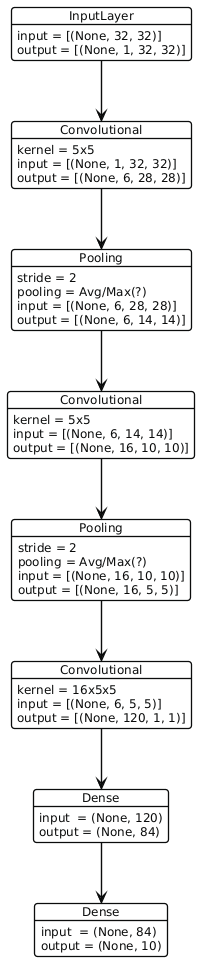
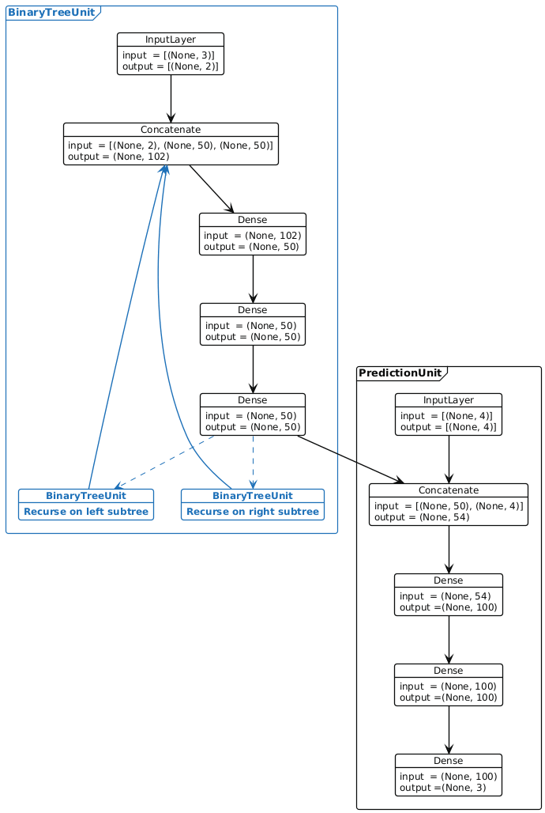

AANN 25/03/2026
Table of Contents
Visualising neural networks
People really like to visualise neural network architectures. Some of
these figures are helpful, some are not, there are many tools for
generating them. I haven't found one I like. When I saw Figure 12 from
Tomaselli et al (2025), it got me wondering if it would be possible
convenient to do this in PlantUML1. PlantUML is a language
for making these types of diagrams which I think does a good job of
balancing ease of use with flexibility2.
Here are a couple of figures I created and PlantUML files to generate them. I think a plate notation, like the one used for visualising graphical models would be nice if you wanted to represent a very deep network. However, that complexity might make them harder to read.
If you have any suggestions for how to improve these, please send them my way!
Example: LeNet (1998)
In Fig 1 I've shown a diagram of LeNet (1998) based on the description on Wikipedia. The PlantUML file is here.

Figure 1: LeNet (1998) based on the description in Wikipedia
Example: Zarebski et al (2026)
In Fig 2 I've shown a diagram of a recursive neural network from my recent preprint, Zarebski et al (2026). I've tried to indicate the recursion with some dashed lines; there must be a better way to do this. The PlantUML file is here.

Figure 2: Recursive neural network used for amortized simulation-based inference. The blue nodes and edges highlight the recursion.
Thanks
Thanks for reading! Please get in touch if you have any feedback :)